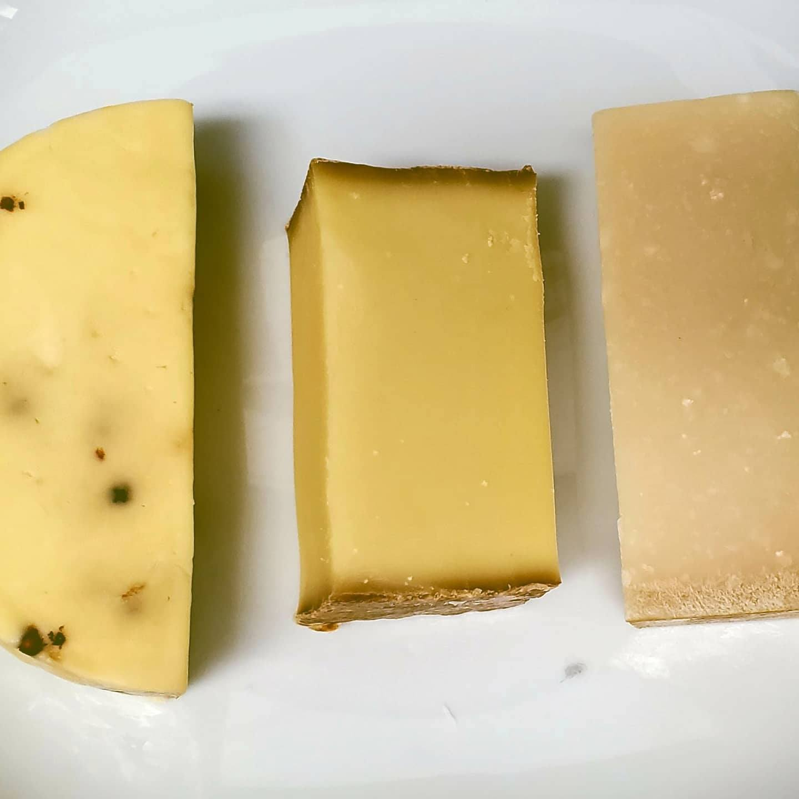
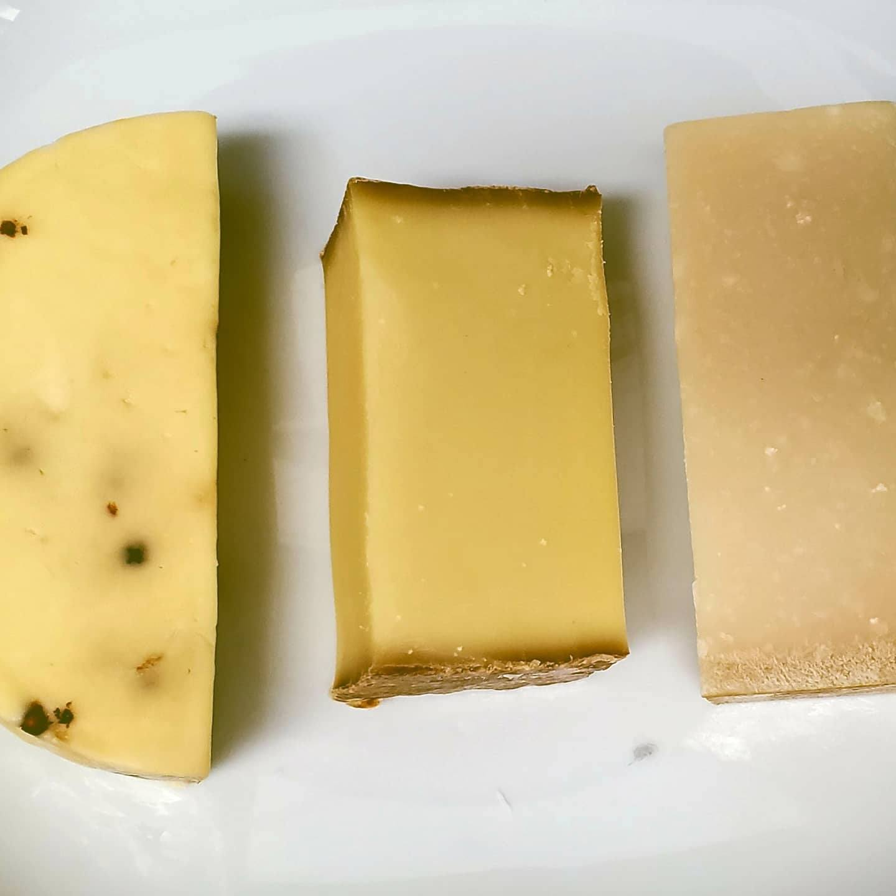
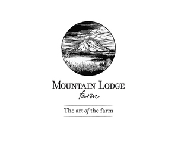
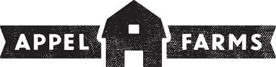

It's gouda to have to you here!
We are a growing group of cheese hobbyists located in Washington state.
The cheese making hobby has been gaining momentum in the past couple of years and this club plans to build on that momentum to advance the hobby...and of course to have fun along the whey! All experience levels are welcome!
Our club meets once a month at the beautiful Columbia Tower Club in downtown Seattle. Enjoy one of the most spectacular views of the city while you share tips & tricks - and, of course, cheese samples! - with other passionate cheese makers.
Participate in seasonal cheese tastings from established Washington cheese makers and learn about the cheesmaking process.
 



To our Cheese Making Community, food is something to celebrate. It’s not just an afterthought but something to take pride in and to share with others.
We invite you to join us.
Our Partners

